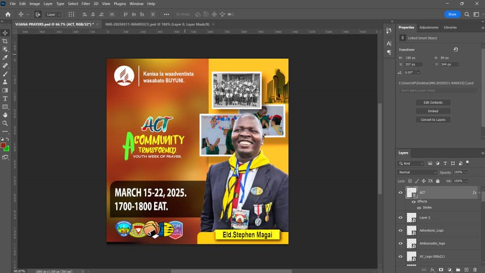
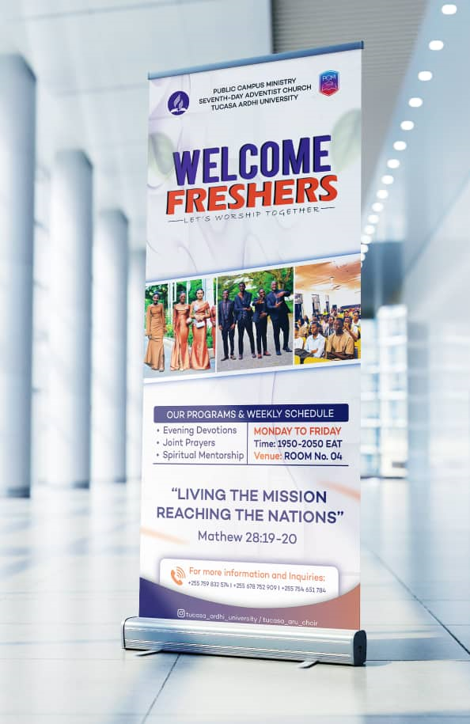
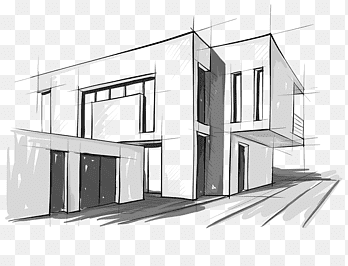

PORTFOLIO





A Quantity Surveying and Construction Economics student at Ardhi University with a strong interest in cost management, project planning, architectural design, and graphic design. My academic training has equipped me with a solid foundation in construction measurement, cost estimation, contract administration, and the financial control of building projects, complemented by creative design skills.
I am passionate about applying economic principles, technical expertise, and visual creativity to deliver efficient, value-driven, and aesthetically sound construction solutions. Through academic work, practical training, and design projects, i continue to develop strong analytical, problem-solving, and collaborative skills, with the goal of becoming a well-rounded professional in the built environment industry.



I am a skilled architectural designer combining creativity with practical construction knowledge. I develop functional and visually compelling designs while ensuring cost effectiveness and feasibility. Proficient in AutoCAD, Revit, SketchUp, and Adobe Creative Suite, I bring ideas to life through precise drawings, 3D modelling, and visual presentations, aimimng to deliever sustainable and buildable architectural solutions.
I am a versatile graphic designer with a strong eye for visual storytelling and creative communication. I engage graphics, branding materials, and digital content using tools like Adobe Photoshop, Illustrator, and InDesign. By combining creativity with precision, I deliver visually appealing and professional designs that effectively convey messages and enhance brand ideentity.

I am a detail-oriented quantity surveyor skilled in cost estimation, project budgeting, and contract management. I combine technical knowledge with practical construction insight to ensure projects are delivered on time and within budget. Proficient in tools like Microsoft Excel, AutoCAD, and cost management software, I support efficient, value-driven, and well-managed construction projects.